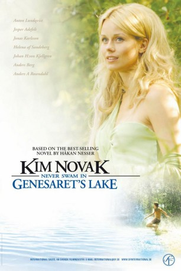

#4071 Kim Novak badete nie im See von Genezareth
 
 IMDB-Wertung: 6.5 / 10
IMDB-Wertung: 6.5 / 10  Metascore: 0
Metascore: 0 
The year is 1962. Erik, his newly aquainted friend Edmund and his grown-up brother Henry are going to spend their summer holiday in a fairly decayed house just near the lake Genesaret. One day, Ewa Kaludis, who looks like Kim Novak, turns up at the place while the summer continous to be the best ever - until it comes to a halt as she begins a fatal relationship with Henry and "the terrible thing" happens ... and nobody knows who dunnit.
Jahr: 2005
Dauer: 88 Minuten
FSK: 12
Land: Schweden Studio: CinemaxTonspuren:
Untertitel:
Auflösung: 720p (1280x720) Größe: 1751 MB
Genre: Krimi, Drama
Regisseur: Martin Asphaug
Drehbuch: Seo-Kyung Chung
Soundtrack:
Darsteller:
 Jonas Karlsson als Henry
Jonas Karlsson als Henry Helena Af Sandeberg als Ewa Kaludis
Helena Af Sandeberg als Ewa Kaludis- Leif Andrée als Albin Wester
 Anders Berg als Berra Albertsson
Anders Berg als Berra Albertsson- Emil Johnsen als Lasse Schiefmaul
- Måns Nathanaelson als Rogga Lundberg
 Jörgen Berthage als Dansbanegäst , uncredited
Jörgen Berthage als Dansbanegäst , uncredited- Anton Lundqvist als Erik
- Jesper Adefelt als Edmund
- Johan H:son Kjellgren als Erik as an adult
- Anders Ahlbom als Kommissarie Lindström
- Bo Andersson als Tok-Raffe
- Peter Bäckander als Slöjdläraren
- Torsten Edman als Edmund, vuxen
- Donald Högberg als Filip Wassman
- Viktor Kannisto als Balzar Lindblom
- Chatarina Larsson als Ellen Wassman
- Niklas Lingström als Röv-Enok
- Pär Luttropp als Brylle
- Fredrik Myhrberg als Band Surfin' Birds
- Cecilia Nilsson als Signe Wester
- Peter Nilsson als Mulle
- Mattias Pihlgren als Band Surfin' Birds
- Jeanette René de Vreede als Eleonora Sinting
- Ulf Sahlberg als Band Surfin' Birds
- Josefin Strandberg als Britt Laxman
- Per-Anders Zetterberg als Band Surfin' Birds
- Maria Kulle als Ellen Wassberg , uncredited
- Ulla-Britt Norrman-Olsson als Gladys Lundin , uncredited
- Peter Viitanen als Snedtrut , uncredited
- Bo Wettergren als Tok Raffe , uncredited
Datei: X:\2005(G-M)\Kim Novak badete nie im See von Genezareth (2005, FSK12, 1280x720).mkv seit 19.07.2016
Festplatte: HD 2005(G-Z)-2006(A-Z)
 Es gibt insgesamt 46 Filme in der Gruppe '2005(G-M)'
Es gibt insgesamt 46 Filme in der Gruppe '2005(G-M)'